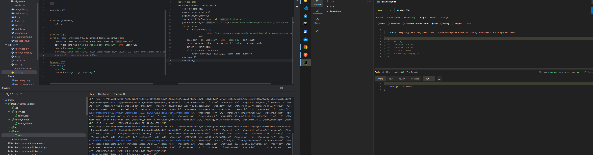

Lab 3
Приложения были упакованы в Dockerfile, объединены в docker-compose, добавлена очередь celery с хранилищем redis.
Код был местами переработан для корректной работы контейнеризации.
Наблюдение за контейнерами было через Services внутри PyCharm.
Приложение app - результат ЛР1.
Приложение сelery - результат работы ЛР2+ЛР3.
Ниже приведены переработанные и написанные файлы в рамках данной работы.
Общий docker-compose.yml
version: '3.9'
services:
celery_app:
build:
context: ./celery
dockerfile: Dockerfile
container_name: celery_app
restart: unless-stopped
ports:
- "8081:8081"
env_file:
- .env
depends_on:
- redis
celery_worker:
build:
context: ./celery
env_file:
- .env
container_name: celery_worker
command: celery -A celery_worker worker -l info -E
restart: unless-stopped
depends_on:
- redis
- celery_app
redis:
image: redis:latest
container_name: redis
ports:
- "6379:6379"
restart: unless-stopped
app:
build: ./app
container_name: app
ports:
- "8080:8080"
env_file:
- .env
depends_on:
- db
- celery_app
links:
- "db:database"
db:
image: postgres:latest
container_name: db
ports:
- "5432:5432"
expose:
- "5432:5432"
environment:
POSTGRES_USER: ${DB_USER}
POSTGRES_PASSWORD: ${DB_PASS}
POSTGRES_DB: ${DB_NAME}
volumes:
- postgres_data:/var/lib/postgresql/data
volumes:
postgres_data:
App - code && screenshots
Dockerfile
Описываем докерфайл для приложения по учету финансов из ЛР1. 1. Из образа python:3.12 строим этот контейнер 2. Указываем рабочую директорию, где будут исполняться следующие команды 3. Копируем зависимости 4. Устанавливаем их 5. Копируем остальные файлы 6. Прокидываем наверх порт 8080 7. Выполняем команду "uvicorn main:app --host 0.0.0.0 --port 8080"
FROM python:3.12
WORKDIR /app
COPY ../requirements.txt /app/requirements.txt
RUN pip install -r /app/requirements.txt
COPY . /app
EXPOSE 8080
CMD ["uvicorn", "main:app", "--host", "0.0.0.0", "--port", "8080"]
main.py
from fastapi import FastAPI
import categories
import customers
import operations
import transactions
from db import *
from contextlib import asynccontextmanager
@asynccontextmanager
async def lifespan(application: FastAPI):
init_db()
get_session()
yield
app = FastAPI(lifespan=lifespan)
app.include_router(customers.customerRouter)
app.include_router(categories.categoryRouter)
app.include_router(operations.operationRouter)
app.include_router(transactions.transactionRouter)
Рабочие скриншоты
Celery - code && screenshots
Dockerfile
FROM python:3.12
WORKDIR /app
COPY requirements.txt .
RUN pip install --no-cache-dir --upgrade -r requirements.txt
COPY . .
EXPOSE 8081
CMD ["uvicorn", "main:app", "--host", "0.0.0.0", "--port", "8081"]
main.py
from fastapi import FastAPI, BackgroundTasks
from pydantic import BaseModel
from tasks import parse_and_save_threading
from celery_app import celery_app
# URLs = [
# 'https://github.com/TonikX/ITMO_ICT_WebDevelopment_tools_2023-2024/pulls?page=1&q=is%3Apr+is%3Aopen',
# 'https://github.com/TonikX/ITMO_ICT_WebDevelopment_tools_2023-2024/pulls?page=2&q=is%3Apr+is%3Aopen',
# 'https://github.com/TonikX/ITMO_ICT_WebDevelopment_tools_2023-2024/pulls?page=3&q=is%3Apr+is%3Aopen',
# 'https://github.com/TonikX/ITMO_ICT_WebDevelopment_2022-2023/pulls?page=1&q=is%3Apr+is%3Aopen',
# 'https://github.com/TonikX/ITMO_ICT_WebDevelopment_2022-2023/pulls?page=2&q=is%3Apr+is%3Aopen',
# 'https://github.com/TonikX/ITMO_ICT_WebDevelopment_2022-2023/pulls?page=3&q=is%3Apr+is%3Aopen',
# ]
app = FastAPI()
class URL(BaseModel):
url: str
@app.post("/")
async def parse_url(item: URL, background_tasks: BackgroundTasks):
background_tasks.add_task(parse_and_save_threading, item.url)
celery_app.send_task('tasks.parse_and_save_threading', args=[item.url])
return {"message": "started"}
# https://github.com/TonikX/ITMO_ICT_WebDevelopment_tools_2023-2024/pulls?page=1&q=is%3Apr+is%3Aopen
# redis-cli lrange main-queue 0 1000
@app.get("/")
async def get():
print("get")
return {"message": "got main page"}
tasks.py
import requests
from bs4 import BeautifulSoup
from db import DB
from celery_app import celery_app
@celery_app.task
def parse_and_save_threading(url):
con = DB.connect()
page = requests.get(url)
page.raise_for_status()
soup = BeautifulSoup(page.text, 'html.parser')
prs = soup.find_all('div', class_='Box-row Box-row--focus-gray p-0 mt-0 js-navigation-item js-issue-row')
for pr in prs:
title = (pr.find('a',
class_='Link--primary v-align-middle no-underline h4 js-navigation-open markdown-title').
text)
span_text = pr.find('span', class_='opened-by').text.split()
date = span_text[2] + ' ' + span_text[3][:-1] + ' ' + span_text[4]
author = span_text[6]
with con.cursor() as cursor:
cursor.execute(DB.INSERT_SQL, (title, date, author))
con.commit()
con.close()
celery_app.py
import celery
celery_app = celery.Celery(
"worker",
broker="redis://redis:6379/0",
backend="redis://redis:6379/0",
)
celery_app.conf.update(
task_serializer='json',
accept_content=['json'],
result_serializer='json',
timezone='UTC',
enable_utc=True,
task_routes={
"tasks.parse_and_save_threading": "main-queue",
},
)
celery_worker.py
from celery_app import celery_app
from dotenv import load_dotenv
import os
if __name__ == '__main__':
load_dotenv()
redis_url = os.getenv("CELERY_REDIS_URL")
celery_app.broker_transport_options = {redis_url}
celery_app.start()
Рабочие скриншоты
